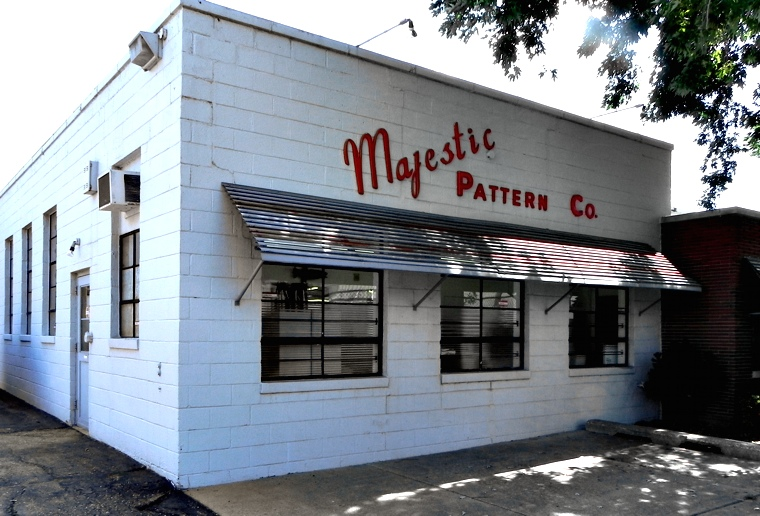

Majestic Pattern
Majestic Pattern Company has been doing business in the Detroit area since 1934. With our team of highly-skilled, long-term employees we can provide quality wood and foam patterns. Our smaller company size lets us provide personal service and expedited deliveries. Our customers range from major automotive companies and their suppliers, to small machine shops, museums, and universities. We deal closely with cast iron, ductile, aluminum, bronze, and steel foundries. We can work with your foundry for your industrial patterns needs or refer you to one of our local foundry sources.
